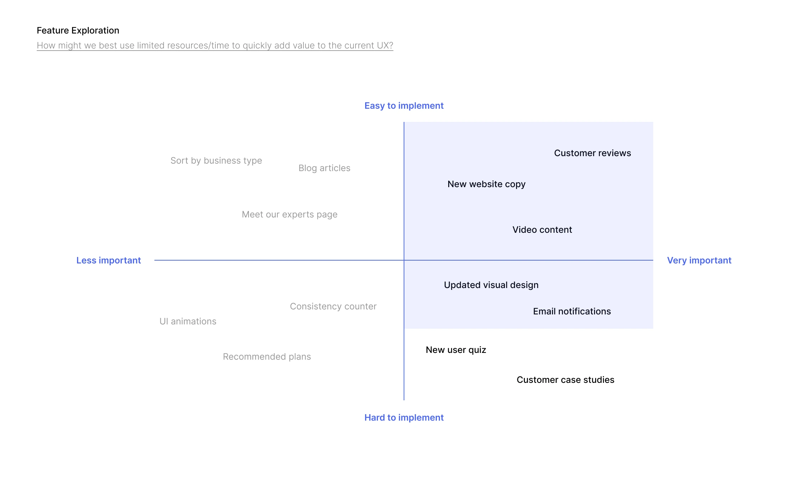

NorthShore Connect Mobile App
You
Hey! What’s this project about?
Chris Z
CardSmart is a financial technology startup that specializes in payment processing for small businesses—they handle over 100,000 mobile transactions a day!
I worked closely with their leadership team to refine their existing flagship site, converting page views into more software demos, ultimately leading to more contracts.

You
What was the discovery process?
Chris Z
In a discovery session with CardSmart’s account team, I learned that while they had no problem attracting potential customers to their website, they had difficulty converting those views into demo sessions for their platform.
I worked with them to find out why. I started with a full UX audit, followed up by some user feedback surveys.


Visual design critique
At a glance, CardSmart's landing page looked outdated. There were typos, legibility issues, and numerous areas where the typography could be improved—that is to say, it could use a professional touch.
Fortunately, redesigning the landing page meant every aspect of the site that could be improved was on the table. Discussions with shareholders and feedback from users guided this part of the process and helped me narrow down what was highest priority.
At a glance, CardSmart's landing page looked outdated. There were typos, legibility issues, and numerous areas where the typography could be improved—that is to say, it could use a professional touch.
Fortunately, redesigning the landing page meant every aspect of the site that could be improved was on the table. Discussions with shareholders and feedback from users guided this part of the process and helped me narrow down what was highest priority.

Takeaways
Branding isn't just logos and advertising. It's also how people interact with and feel about your product.
Bringing NorthShore's brand of excellent physical therapy into people's homes, amidst the challenges of a global pandemic, taught me how to understand my clients at a higher level.
Moreover, I've learned to use my clients' strengths to use strong real life relationships as opportunities for further digital connection.
Everyone has a body and needs to care about their health—that care should happen outside hospitals and offices too.